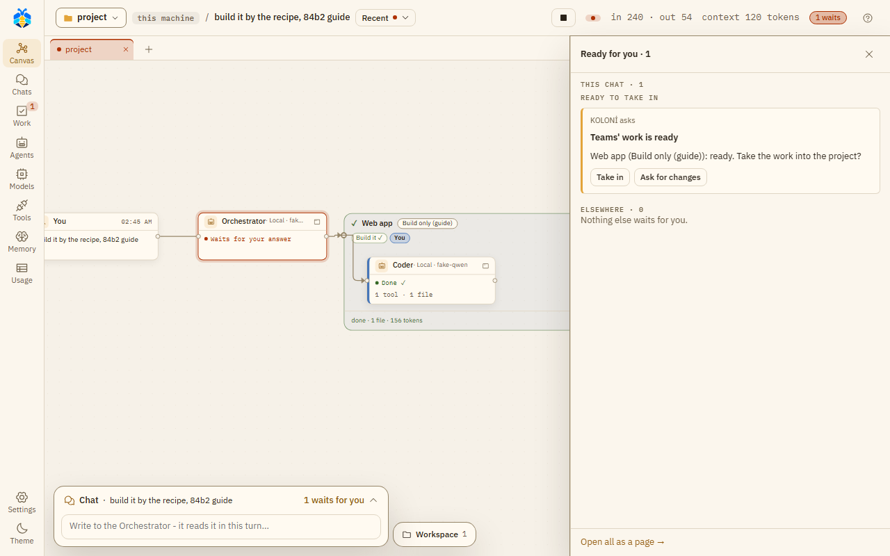

Working copies and Take in¶
The Workspace¶
The Workspace button, the first under the message box, opens "the project's files, what agents changed, wrote or showed, and what waits for you". Its number is what waits for you in this chat, a copy kept for Take in too (in Changes that copy is under Kept).
- Files: the project's files. Open files show as tabs.
- Changes: what changed, sorted by what you have to do: Waits for you, At work, Kept, In the project, Not by an agent, Needs a look, and Closed (shut at first). Inside a group, each change sits under its agent and your message. Each file says in words what happened ("changed", "new", "deleted", "you said no"). With git, the tab shows this chat's work and what git sees changed since the last commit. Without git (or when git does not answer in time), it shows this chat's record and says so. The tab's count is git's (as in the top bar), or without git what is not closed. Show folders as a tree puts the files in their folders. When changes wait for you, it says how many and offers Next waiting ▸. A file that waits opens on its diff with Approve and Reject; one in the project offers Revert. An agent's copy opens on what it holds, with Take in… (or Look) to its card.
- Previews: dev servers agents started.
- Working copies: each sub-agent's copy ("name's copy").
Working copies¶
Each sub-agent changes files in its own copy of the project (where it is, below). Your folder does not change until its work is taken in.
.gitand caches are not copied.node_modules,.venvandvenvare linked, not copied.- A project over 20,000 files or 500 MB gets no copy: the agent works in the project itself.
- When you and an agent changed the same file, KOLONİ merges line by line (for files up to 1 MiB).
- On Linux and macOS a copy keeps whether each file is runnable, so a script such as
./gradlewstill runs, and Take in carries that back to your project. A new file written with Write files gets your usual mode (0644with the common umask). - Work goes into your folder one way at a time: a Take in waits while a branch is merged, and the other way round. What went in reaches the other agents' copies where they did not change those files, and a copy made at that moment gets all of it.
Agents at work beside each other are told that each works in a copy of its own: change only what
their task needs, write nothing outside their copy, stop no program by its name, start a server on a
free port, and install nothing into the linked node_modules, .venv or venv. A command an agent
runs in its copy is asked at every level, Full auto too, when it:
- names another agent's copy, a worktree of your project, or a place above its copy (
../..) - also past acdKOLONİ cannot follow, where any..counts; - writes in the linked
node_modules,.venvorvenv, which are your project's own, or installs into them (in a turn you watch); - stops programs by their name (
taskkill /IM,pkill,killall,Stop-Process -Name), or looks a process up and stops it (lsof -ti:8000 | xargs kill,fuser -k). By its id (taskkill /PID,kill 1234,Stop-Process -Id 1234), or one the line itself started (kill $!), is fine. In your project, at Full auto, Check what I said first may let a stop by name run on a line of yours, but never one that may stop KOLONİ itself or another agent's CLI (python, node, uvicorn, claude, codex, copilot, qodercli, agy, a filter, a wildcard,kill -1orkill 0, or a process looked up).
KOLONİ reads the command as written: a path built in a script is not seen.
Where copies and worktrees are¶
| Your project | A sub-agent's copy | A branch's worktree (a ☾ Away job's, a team's on a branch) |
|---|---|---|
| In git | Outside it: runtime/copies/, or your data folder (%LOCALAPPDATA%\KOLONI\copies\ on Windows, ~/.local/share/KOLONI/copies/ elsewhere) where the runtime folder sits in a repository or beside an AGENTS.md / CLAUDE.md |
In the project: .koloni/worktrees/<id>/<agent>/tree |
| Not in git | In the project: .koloni/copies/<id>/<agent>/tree |
- (no git, no branch) |
<id>is this KOLONİ's own folder there: two KOLONİs on one project (yours and a test copy) never clear away each other's.- A copy inside a project in git would have no
.gitof its own, sogitin it would answer with your repository: that is why such copies stay outside. A worktree has its own.git, so git in it answers with its branch. Whether your project is in git is looked at each time a copy is made: once yougit init, the next copy is made outside. - The first time a worktree is made, KOLONİ adds
/.koloni/worktrees/and/.koloni/copies/to your repository's own.git/info/exclude(in a linked worktree of yours, the main repository's), sogit statusstays clean. Your.gitignoreis not touched. In a project with no git,.koloni/copies/holds a.gitignoreof its own that ignores all of it, so the copies stay out of the git it gets later; KOLONİ's.koloni/.gitignorelistsworktrees/andcopies/too once it writes one for its scratch (a line it lacks is added after yours). - Each is one agent's work: that agent works in it as its own folder; any other agent, or a command at the project's root, may look in but not write, delete or run anything there (permissions).
- Neither is copied into another copy, shown in the Files window, searched by an agent's search, nor
listed as a change of your project. When you delete the project from KOLONİ, they go with it (your
branches stay). A worktree whose records your
git clean -fdxremoved is left as it is, with its uncommitted work, for you to delete. - A CLI started in a copy or worktree in
.koloni/reads your project'sAGENTS.md/CLAUDE.mdfrom the folders above it, and the copy's own as well: the same words, read twice. - Copies and worktrees made before 0.1.10 stay where they were made, and are found and decided there.

A working copy's life, from the copy to your project; the "On a branch" lane is Branches below. (full size)
Taking work in¶
When a sub-agent finishes, its changes come back on a card: Take in …'s work?, with Take in and Discard. At Auto-edit files and Full auto they come in without a card when the agent finished, nothing clashes and the tests it wrote passed. See Permission levels.
- Changed on both sides: files you and the agent both changed. "Nothing is chosen for you"; pick a side for each, or press Let an agent resolve the conflicts.
- Run the test runs, on the copy, the tests the agent wrote or changed - only those, each part's test command from the project map narrowed to them. They are its own code: KOLONİ's guess runs them by itself only at Full auto, so at Auto-edit the card waits for this click. One that wrote no test has none to run: "No tests of its own to run before it is added - KOLONİ's check at the turn's end runs every test." See Checked.
- Part of it taken: a card can take some of its files and keep the rest - a file that changed since you
looked is shown again, not taken, and the API's Take in may name the files it takes (
files). Those taken say they are in the project; the rest wait on the same card for Take in or Discard, the agent's copy kept for them. Discard then throws away only the rest: what was taken stays, and the card says its work was taken in. The commit offered once the card closes - where Save each sub-agent's work as a git commit is on, as after any Take in - holds only the agent's change in each file taken, whichever step took it - even across a restart of KOLONİ. A branch's work goes in whole: naming some of its files is refused, also on the card of a branch copy kept after KOLONİ stopped.
A team's recipe keeps its work in one copy until you press Take in on the Teams' work is ready card. See Ready and approval cards.
Take in: the team's work comes into the project only now.

A team's work waits under Ready to take in until you press Take in.
Branches¶
The Orchestrator can give a team's work a git branch of its own. Then the card offers Merge or Open pull request, as you chose under Settings › This project › When the work is done › How a team's finished branch reaches yours. Until you choose, the first finished branch on a GitHub project asks. A pull request lets KOLONİ push the branch; it never merges one. Keep this branch after merging keeps the branch.
Opening a pull request needs gh (GitHub's CLI) installed and signed in (gh auth login), and the
project's origin must be the GitHub repository gh sees. Until then the card says why it cannot open one.
A branch that holds commits of yours that origin does not have - your branch or another merged into it,
fast-forwarded to, rebased onto or cherry-picked - is not pushed until you push them, also after you
amended, rebased or dropped them; the card names them. What counts as the agent's own is what its branch's
history says was committed on it. A commit not on origin that this history does not show and no branch of
yours holds - an agent's cherry-pick of yours (a new commit), or the agent's own once that history is gone
(git reflog expire, or git's cleanup of an old branch) - is not pushed either: the card says KOLONİ cannot
attribute it, rather than calling it yours. Nor is a file that holds exactly what a commit of yours not
pushed yet put there (an agent's squash, pick or amend of it, or a copy of a stashed file, of a commit on a
detached HEAD - in this folder or in another worktree of yours -, or of a file you had not committed when
the branch began). What is on GitHub is what origin itself says its branches hold, asked right before the
push - never your remote-tracking branches (origin/*), which anything in your repository may write: a
commit only such a ref says is pushed is yours, and a stale one (a branch deleted on GitHub, a teammate's
push you have not fetched) changes nothing. Where GitHub's branch the pull request goes into has commits
you have not fetched, it asks you to fetch first; where git's config rewrites the address the push goes
to (an insteadOf or pushInsteadOf rule matching it), nothing is pushed. And while you have any commit or
stash not on GitHub - on a branch, in a stash, on a detached HEAD, in any worktree of yours - or the
branch began from your uncommitted work, a pull request waits for your click at every level, Full auto
too: the card says why ("you have 2 commits not on GitHub yet", "you have a stash not on GitHub yet";
"not on origin" where the push goes to a folder or another host), so you can check its files are the
agent's work. KOLONİ never pushes onto a branch of the same name origin has already, a fast-forward
too: "origin already has a branch named …: nothing was pushed". Nor does a secret KOLONİ knows - a
provider key you saved, an MCP server's variable a secret's name holds, the page's key, one given on a
card, one of the environment's or a value the project passes to its commands, or the token or password
such a value holds alone (a DATABASE_URL's password in a settings.py) - go up or into your
branch, in a file or in its name: KOLONİ's own commit leaves such a file out and its card says so, and
a branch an agent committed one on itself is neither merged nor pushed ("take it off the branch
first"). The rest of the work goes on; an ordinary value (production, a path) stops nothing. A
file named as a secret (.env.local, token.json, a data file in a secrets folder -
which names) goes up with a pull request only on your click, at
Full auto too: its card says "token.json: named as a secret - it goes to GitHub only on your click". A
task's name goes up as the commit's subject and the pull request's title mentioning nobody and closing
no issue, a token by its shape (ghp_…, a password in an address) masked: a zero-width joiner follows each @ and comes before the number a closing keyword names
(Fixes #12, Fixes GH-9, an issue's link), and no control character is kept; the pull request's
body puts what an agent wrote - the task, the files' names, the check, its notes - in code.
Where git checks your files
out with CRLF (core.autocrlf=true, Windows' default) and they are LF, a file whose line ends alone
differ is no change of yours, and Take in keeps your file's own line ends. Where a commit of yours not pushed is in another worktree, the
card names that worktree's folder; if you deleted that folder by hand, git still keeps the worktree and
its commit, and git worktree prune lets git drop it. A worktree of yours where you look at the agent's
branch (git worktree add --detach <folder> koloni/…) does not make its commits yours, nor does a
worktree of another KOLONİ on its own koloni/… branch - but a commit you made there before it went
onto such a branch, or one a branch, tag or other remote of yours holds too, stays yours; a worktree
of yours whose branch you deleted still holds your commits.
The Inspector and Where the work is label such an agent "works on branch koloni/name" (an agent in a plain copy: "works in its own copy").
The branch starts from your folder as it is, not only from your last commit: your edits, staged files
and new files that git does not ignore are in the agent's worktree. KOLONİ makes that one commit
("KOLONİ: your folder as koloni/name began") from an index of its own, so your files, your index,
your branch and HEAD are not touched; it is the branch's first commit and shows in git log
koloni/*name*. Left out, whether you staged them or not: what git ignores (.env, build output),
files named as secrets (.env.local, .env.sample, a key file, credentials.json, token.json, a
data file in a credentials or secrets folder - which names),
node_modules,
.venv and venv (linked in instead), a git repository inside your folder, KOLONİ's own .koloni
folder, and every link or junction with what it leads to. Code named like a secret (credentials.py,
.env.example) is taken as any file. The card says in one line which of your files were left out as a
secret or a link: "Not in its branch: 2 of your files (.env, token.json) - a secret by its name, or
through a link".
The card, the merge and a pull request carry the agent's work alone, measured from that commit - never your uncommitted files. A merge waits for your commit:
- If the agent changed a file you have uncommitted changes in, the card lists it under what is in the way; commit yours, then Merge.
- If it changed the very lines you had not committed when it began (or a new file of yours), the card says so - nothing is merged or sent as a pull request over them, and no agent puts them together. Commit yours, then Merge.
- If what is in the way is another agent's work you took in and did not commit yet, the card names that agent's Take in: commit it (on its card, where a commit is offered), then Merge.
Where the agent's work changes a file you had not committed when it began, the card says so and waits for your Merge, at Full auto too.
If your folder had more new or changed files than a copy takes, your git is older than 2.40, or git could not take your folder as it is (a file another program holds open, a path too long for git, a folder it may not read, or longer than three minutes), the branch starts from your last commit as before, and its card says so in one line under its heading: your uncommitted changes were not in it.
Its worktree, in your project's .koloni/worktrees/ (where), is locked while the agent works (git worktree list -v says
"KOLONİ: an agent works here; KOLONİ removes it"), so your own git worktree prune, remove or move
leaves it alone. KOLONİ unlocks it before it removes it. When KOLONİ starts, it removes git's records of
its own worktrees whose folder is gone (after a crash, say), and nothing else: never your worktrees,
never a branch. The Orchestrator is told that koloni/… branches and these worktrees are not its to
delete, rename or switch to.
In its copy, git works for the agent on its own branch, and it is told so: status, diff, history and its commits there, with a few plain options, run as its other commands do. Any other option, and git that reaches your own repository - switching branches, stashing, reset, merge, push, config - is asked at every level, Full auto too. In a project that runs in Docker the agent is told that git does not work in its copy: the worktree points to a folder on this machine, not in the container.
Your repository's git hooks (pre-commit, commit-msg, post-commit, also those of a core.hooksPath such
as husky's) do not run for an agent's own git commands in its copy - a commit on its branch included -
nor for an MCP server's it starts there; nor does your core.fsmonitor, and its commits are not
signed. On a branch, a command that clears or sets git's own environment (unset GIT_…, env -i,
$env:GIT_… =) would bring them back: it is asked at every level, Full auto too.
Those settings reach whatever the agent runs in its copy, your project's tests too: a test that needs your git hooks or signed commits does not get them there.
A secret you gave in this turn (see Security model) never leaves on a branch:
- If a file on a finished branch holds it, the card does not merge it or open a pull request, at any level, even on your click. Take the secret off the branch, or press Discard, which deletes the branch.
- If the agent stopped first, or nobody watched the turn, a branch that holds it is deleted whole and the Orchestrator is told (on a Stop, the chat says so too). For a branch opened again from an earlier turn, the work of those turns goes with it.
- Keep this branch after merging is refused when any of its commits holds it.
When an agent stops¶
An agent on a branch that stops before it finishes leaves its work committed on the branch. That holds also when you press Stop or Stop everything while it works; the chat says so. A Stop while KOLONİ merges a finished branch by itself (at Full auto) waits for git to finish: the merge is on its card, and the branch's worktree goes.
Told to go on (by the Orchestrator, in this turn or a later one you watch), it goes on on the same branch: its earlier commits are there, and new work goes on top. Its merge is still held to where the branch was first made from: if the project is on another branch now, or that commit is gone from it, the merge waits for you, at Full auto too. Its work is still measured from your folder as the branch began.
A branch copy kept over a restart comes back as a kept card, like a plain copy's: a file you changed too is merged line by line, from what the branch was made of. Discard deletes its branch and git's record of its worktree; so does a Take in that took all of it, unless the agent may still go on on that branch.
Sometimes it cannot go on on its branch. Then it works in a fresh copy of the project instead:
- The branch was merged or sent as a pull request already: it and the Orchestrator are told why.
- Git refuses the branch (it was deleted, another branch has its name now, or it is checked out somewhere else): they are told why too.
- You pressed Discard, which deleted the branch: no message.
- The branch was made by an older KOLONİ that did not record where it started: no message.
An agent in a plain working copy that stops unfinished keeps what it changed: by itself (it failed, or hit its step limit), and on Stop or Stop everything too, also when its Take in card was already waiting for you. A card under Ready to take in offers Take in or Discard; nothing of it reaches your folder before that, at Full auto too. An agent told to go on gets that copy back. A copy with no changes is removed. A team's recipe and a job while you're away keep their copy on a Stop as well. Every copy kept for your word, in any chat, is listed in Settings › The app › Your data, with what it takes and Discard; KOLONİ deletes none unasked.
The git button in the top bar ("⑂ main · 4 changed") opens Where the work is. It reads git and changes nothing but the branch you switch to. It has three parts, each saying in words how a piece of work stands:
- Your branch: what is not saved in git yet (See changes), the last commit, and + New branch. While a turn works or files are not committed, it says why you can't switch.
- Agents' copies · this chat: "working" (See changes), "finished, waits for you" (Take in…), or "kept" (Look).
- Other branches: "not joined" or "joined ✓", how many commits ahead and behind, with Look and Switch to. What an agent said it made, but git does not show, is listed last.
While a branch is open in the Workspace (Look), it shows read only, against your branch, with Back to the project.
Starting from a GitHub issue¶
On the Chats page, From a GitHub issue… (beside New chat) starts a chat in the open
chat's folder from an issue. Paste the issue's address, or its #number in the project's repository, or
pick one of the repository's open issues from the list. KOLONİ opens a new chat, attaches the issue's
title, text and comments as a file (github-issue-12.md), and writes a short first message. Nothing
runs until you press Send. Long issues are cut at about 20,000 characters.
Anyone can write an issue, so KOLONİ marks its text as data for the agents, never as your instructions. See Outside content for what that does and does not stop.
KOLONİ reads GitHub with your own gh (GitHub's CLI) and never stores or sees a token. Install gh
from https://cli.github.com and sign in once with gh auth login. Until you do, the dialog says why
no issues are listed. The project folder must be a git repository. Listing issues, or picking one by
#number, also needs its git remote to be on GitHub; an issue's address works without that.
Committing¶
With Save each sub-agent's work as a git commit on (Settings › This project › When the work is done), the card offers a commit once the changes are in: one commit per piece of work, only where the folder is the top of a git repository. It is always your click, and nothing is pushed.